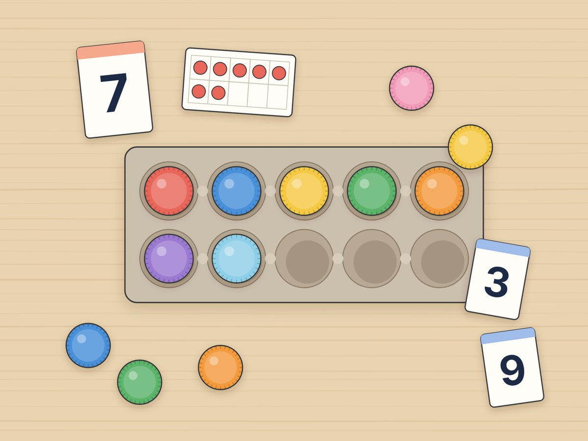

전체 단원 › 실험·활동 › 1학년 1학기 수학
달걀판 병뚜껑 수 세기

10칸 달걀판에 병뚜껑을 하나씩 놓으며 9까지 세어요. 수 카드와 점 카드 짝 맞추기, 하나 더·하나 덜 놀이까지 해요.
20분 · 난이도 ★☆☆ 쉬움
준비물
- 10구 달걀판 1개 — 달걀 10개짜리 종이 판이에요. 5칸씩 2줄이라 수 세기 판으로 딱 좋아요. 30구 판이면 10칸만 써요.
- 병뚜껑 10개 — 페트병 뚜껑. 색이 섞여 있어도 괜찮아요.
- 수 카드·점 카드 도안 — 아래에서 내려받아 인쇄해요. 두꺼운 종이에 붙이면 오래 써요.
- 가위 — 카드 오리기용
하는 방법
- 카드 준비하기
도안을 인쇄해 수 카드(0~9)와 점 카드(0~9)를 오려요. 수 카드는 뒤집어서 한쪽에 쌓아 둬요. - 카드 뽑고 병뚜껑 놓기
수 카드를 한 장 뽑아요. 6이 나왔다면 "하나, 둘, 셋…" 소리 내어 세며 병뚜껑 6개를 달걀판에 놓아요. 윗줄 5칸을 먼저 채우고 아랫줄로 내려가요. - 점 카드와 짝 맞추기
수 카드마다 같은 수의 점 카드를 찾아 나란히 놓아요. 점을 하나씩 세지 않고 "윗줄 5개에 3개 더, 8!"처럼 한눈에 알아보면 더 좋아요. - 하나 더, 하나 덜
달걀판에 병뚜껑 5개를 놓아요. 하나를 더 놓으면 6이에요. 다시 5개에서 하나를 빼면 4예요. 수 카드를 옆에 놓으며 확인해요. - 숨은 수 찾기
1부터 9까지 수 카드를 순서대로 늘어놓고, 아이가 눈을 감은 사이 한 장을 뒤집어요. 어떤 수가 숨었는지 맞혀요. 병뚜껑이 하나도 없는 빈 달걀판은 0이에요.
생각해 봐요
- 병뚜껑 7개를 놓으면 달걀판에 빈칸은 몇 개 남나요?
- 8보다 하나 더 큰 수와 하나 더 작은 수는 무엇일까요?
- 빈 달걀판은 어떤 수 카드와 짝이 될까요?
개념 정리
수는 물건이 몇 개인지 알려 주는 약속이에요. 병뚜껑 6개도, 사탕 6개도, 친구 6명도 모두 6이라고 써요. 하나를 더 놓으면 바로 다음 수가 되고, 하나를 빼면 바로 앞의 수가 돼요. 하나도 없을 때는 0이라고 해요.